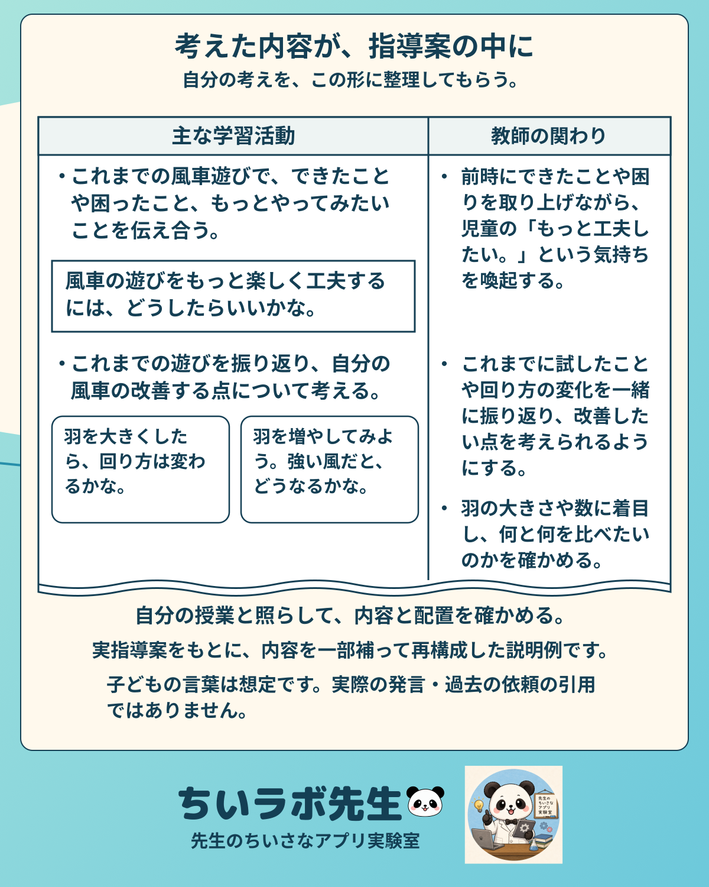

01
中身が入って、Wordで返ってきた
教師の関わり
実際の会話ログではなく、流れの説明図です。
新鮮だったのは、相談の答えが文章で返ってくるだけでなく、指定した枠に中身が入ったWordになったことです。

大まかな考えをもとに、活動だけでなく、子どもが言いそうな言葉や教師の関わりの候補も入っていました。一つ一つ、完成した文をこちらで用意して、転記してもらったわけではありません。
ただ、枠に入ったからといって、そのまま完成ではありませんでした。読んでみると、自分が考えていたことと少し違うところもあります。そこから、またやり取りが始まりました。
02
こだわりや違和感を伝えて、直してもらう
きれいな修正文を先に作るより、何を大事にしたいのか、どこが合わないのかを話し言葉で伝えていきます。
子どもの言葉教師の
関わり
欄ごとにばらばらではなく、つながりを確かめる。
大まかな考えから候補を入れてもらった後も、こだわりたいところや、意図と合わないところを伝えます。細かな文を一つずつ指定するのではなく、授業で大切にしたいことをやり取りの中で確かめていきます。

その意図をもとに、活動、想定する子どもの言葉、教師の関わりなど、つながっている欄を整え直してもらいます。そして、返ってきたWordをまた読む。自分のこだわりや違和感を伝えながら、少しずつ近付けていきました。
03
最後は、自分の授業と照らし合わせる
候補に入った子どもの言葉が自然か。教師の関わりは、自分がしたい授業に合っているか。目標や評価とのつながりはどうか。そこは、自分で確認します。

言葉や配置、細かなところは、最後に自分でもWordで直せます。編集できる形で手元に残るので、そこからも手を入れられます。
04
試してみるなら、メモと空の書式から
最初から指導案の文章を全部書き切らなくても、自分が考えている流れや大事にしたいことを伝え、返ってきたものを見ながら考える方法もありました。
試すときは、学校のルールを確認し、児童の個人情報や公開できない資料をそのまま渡さないことも大切です。
今回の試行は、紹介動画にもまとめました。動画では流れを、このページでは、やり取りの中で大切にしたことを残しています。
教室から、ひとつずつ。🐼
動画で見る
指導案づくりの流れを、約1分42秒で。
音声：VOICEVOX Nemo